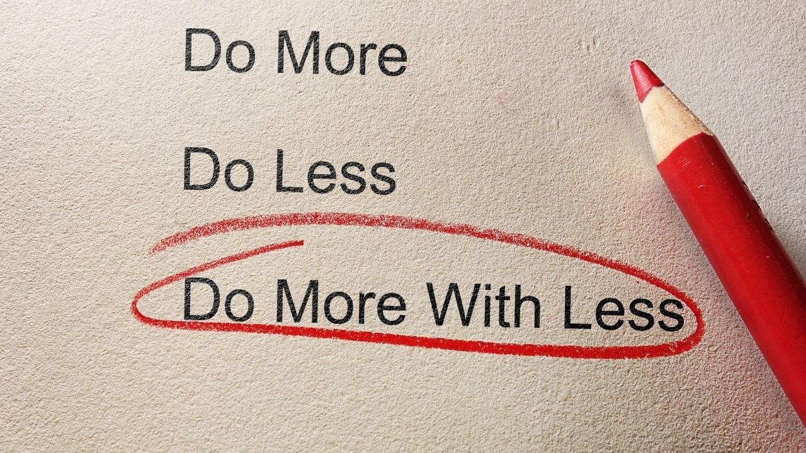

Although UI frameworks may take additional time and effort to learn, they also serve to make programming easier. One example of this is Bootstrap 5. There are more classes to learn, extra commands, the list can go on and on. However when compared to raw HTML and CSS the difference in terms of usability is night and day. Bootstrap 5 feels easier to work with because certain classes are already provided for you whereas in raw HTML and CSS they are not and you need to basically code what you want. For example bootstrap 5 offers classes such as grid system and spacing classes which include .row and .py but in HTML that is not the case. This would mean for a lot more work in HTML whereas in bootstrap a lot of time is saved.
Personally having had experience with raw HTML and CSS first and then Bootstrap 5, I could notice a difference right away. My first week of learning raw HTML and CSS felt miserable. My workout of the week(WODs) felt horrible to do and I was just not having a good time. But when we started using Bootstrap 5 the following week it felt a lot better to use. I was by no means easier, but in terms of utility and usability, I felt like I benefited from the switch a lot.
While I am only experienced in using one framework, Bootstrap 5, I can tell why software engineers may want to use other UI frameworks such as Semantic UI. From the small amount of UI design experience I have accrued so far, I can tell how much of a hassle it can be without the right tools. Having to manually place things, create borders and padding, the list goes on and on. While it should not be said that using a framework is essential to UI design, the biggest benefit is probably the amount of time saved. While it has not been mentioned yet, everything mentioned beforehand all culminates to time being saved. Which at the end of the day is one of the most important aspects of work in general because no one likes to do more work than necessary, especially when the alternative is night and day in terms of how much time is saved.
Before using Bootstrap 5, I never had any experience working with a framework, but after using one I now know how important the benefits can be. I cannot imagine how many frameworks UI alone must have because of all the different utilities that can be made and used for designing websites. After using Bootstrap 5, it feels almost impossible to think about going back to raw HTML and CSS. I am hoping to learn more about different frameworks in the future not only limited to HTML and CSS but other languages as well.